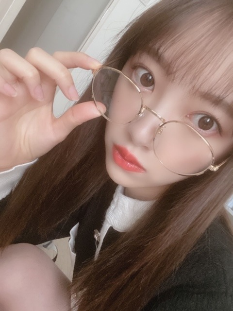

2020/0305Thu#しあわせの保護色
MVが公開されましたね✨
今までに無い雰囲気の、ミュージカルのようなMVでしてワンカットの撮影が多く新鮮で楽しかったです☺︎

衣装は私の好きな水色尽くし！
赤も差し色で可愛かったです☺︎
あとはカチューシャマニアとしてはキラキラブルーのカチューシャを付けれて嬉しかったなぁ
みなみと色違いにしたの！

みなみおな♡
最後のダンスシーンの衣装も好き

キラキラのチョーカーとイヤリングがお気に入りです！
白石さんが終始可愛くて美しくて...
映像越しだけどめちゃくちゃ輝いています。
一緒にペアダンスをさせていただいたシーンは
泣かないように我慢しました！
たくさん観てください。
感想お待ちしていますね〜(^-^)
ではは

2020/03/05 14:00


コメント(429)
新曲のタイトル好きです。
衣装も可愛いですね。
水色はやはり映えます、お似合いですね。
カチューシャも可愛いですけど、写真が可愛いです。凄く可愛いですね。
今日は更に癒される写真です。
癒しのコレクションの中でもかなりの位置になりそうです。
ありがとうございます。
可愛いな未央奈さん、大好きですよ星
PV観るの楽しみです。
頑張って行きましょう！
良い♪売れるd(`･∀･)b！
ＮＨＫみんなのうたで聴こえてきそうな優しい曲。
みなみちゃんのカチューシャも、かわいいし、未央奈ちゃんも似合ってます☆
で、カップリング曲のひとつって、『サヨナラ 硝子の少年』でしたっけ？
Stay with me～硝子の少年～♪←って違う。
Σヽ(ﾟ∀ﾟ；)
サヨナラ stay with meですね。
しあわせの保護色、ＭＶ見たよ！
ペアダンスのシーン凄く良かった～。
まいやん、もうすぐ卒業しちゃうけどたくさん思い出作って欲しいな…。
レコメン、オールナイトニッポン聴いたよ！
未央奈ちゃんの声聴いてたら、めっちゃ元気貰えるから好きだな～。
明日のＭステも楽しみにしてるよ！
あと少し まいやんとの思い出いっぱい作ってね
MV見たよ！衣装も可愛いし、ブルーのカチューシャも似合ってたよ。みなみおな！
ダンスシーンの衣装も綺麗だね。ほりきたコンビ良い写真。
まいやんを送り出すようなMVに、これでまいやん最後なんだなあと思うと泣けた。良いMVだね。
昨日はレコメンとANNお疲れ様！僕は途中で寝ちゃってさっき聴いたよ。まいちゅんと二人って新鮮で面白かった。ラジオの未央奈やっぱり好きだなー。
では！
MV観るね！
みなみおな堀北コンビ可愛い❤
カチューシャも良きだね☆
Mステも楽しみにしてます(^^)
期ごとに分かれていて乃木坂が1期、2期、3期、4期と成長して大きなグループへとなっている様子が描かれたとても素晴らしいMVで感動してしまったーT^T
まいやんとのペアダンスすごくよかった(ToT)
あれは泣いちゃうよー。よく我慢できました
しあわせの保護色
みんなで盛り上げていこーーーー
未央奈とまいやんのペアダンス見れて良かった！
2人とも輝いていたよ
ミュージカルみたいな感じで、新しい乃木坂がみれた気がしました！
2期生のMVも楽しみにしてます！
未央奈ちゃん、踊ってた！
チャァオ～～!☆彡
綺麗なぁプリンセスみおちゃん❕❤️❤️❤️❤️❤️笑顔
おいらも、以前マミーに～～～⤴️⤴️⤴️
「おはよぉ～～⤴️⤴️❕❤️❤️」って、後ろからハグしたら～～⤴️⤴️
あしらわれたことあったよぉ～～⤴️⤴️❕笑顔
(まぁ！・・マミーが可愛いから許すけどねぇ❕笑顔)
みおちゃん❕笑顔・・・
仲間だねぇ～～～⤴️⤴️❕❤️❤️❤️❤️❤️笑
おいら～姪っ子が幼い頃、ハグされても微動だにしなかったけどなぁ～～～⤴️⤴️❕笑顔
あと何度かぁ～～～⤴️⤴️
ジャングルジムにされても、テーブルで食事中に足をポンポンされてもぉ～～⤴️⤴️
絶対に微動だにしなかったなぁ～～～⤴️⤴️❕❤️❤️❤️❤️❤️笑
可愛いぃ～姪っ子:「(ジャングルジム)よいしょ、よいしょ～」
おいら:「こら！こら！❤️❤️(にっこり)」
今は乃木坂メンバーさん皆が、姪っ子と同じくらい可愛いぃ～～～⤴️⤴️⤴️❕❤️❤️❤️❤️❤️笑顔
(σ≧▽≦)σ❤️❤️❤️
☆おすまし！より☆彡
奇跡が起きた！！
MV何回か見てたらこみあげてきましたー
めちゃめちゃ良かったです…感動しています
MV何回か見てたらこみあげてきましたー
めちゃめちゃ良かったです…感動しています
切なさもあるけど、未来に向かって頑張ろうと思える元気が出る曲だなと思いました！！
しあわせの保護色
MV視ました。
とても暖かい曲でさみしさと楽しさが
入り交じった感情を僕は抱きました。
(ノスタルジックな感じ)
皆さんのパフォーマンスも
演出も優しさにアフレテいて好きです☺️
連日で嬉しいよ〜
しあわせの保護色のMV見たよ！
とってもいいMVですね、水色の衣装の堀ちゃんGoodです！
堀ちゃん、水色好きならサイリウムカラー水色に変更しちゃえば？（笑）
土曜日のSHOWROOM楽しみすぎです！
2期生ライブ中止になって残念だったけどこんなサプライズ想定外でした！
嬉しいよ〜
グッズも買うよ！
花粉症大丈夫？
では〜
MV見ました。
かわいかった～
未央奈ちゃんと白石さんのところがいいですね。
白石さんとのいい思いで作ってね。
写真は全部かわいいです
特に日奈子ちゃんとのツーショット写真
未央奈ちゃんプリンセスみたいです
メガネも似合ってて知的な感じがします。
2期生ライブ配信良かったね。
MV見たよ！
またコメントします！
1期生、2期生、3期生、4期生と流れていくところが何か歴史を感じるような演出でとても感動しました！！
久しぶりのみなみおな！かわいい！！
MVとっても素晴らしいです♪
曲調がゆったりして心地良いですし、
歌詞からも優しさが溢れてますよね✨
衣装のコントラストもポップですし、
MV全体が明るくて温かみを感じます✌
みなみおなのお揃いも微笑ましいし、
ダンスシーン衣装姿もキラキラです♡
白石さんとっても眩しく輝いてます！
ニュース番組のメイキング場面観て、
自分も思わず涙が溢れてきましたよ☆
また確実に大好きな一曲が増えました！
メガネ姿の写真も時間が止まりそう～☺
2.30秒あたりのダンスがかわいい。
しあわせの保護色のMV、観ました！
最初聴いた時の感想としては、なんだかこの季節にマッチした、春を感じる曲だなと思いました！
タイトルの、しあわせの保護色の意味、今回MVを観て、曲を聴いてわかりました！
しあわせは近くにあるのだけど、保護色のように気づきにくいということなのですね。
そうだなって感じましたね。そうゆう歌詞だけで感動ものです
個人的には他にも自分の心に響く、心の中にすっと入ってくるような歌詞が色々とあるのですけど、そうですね、そこはまた、気が向いたらコメントします。
そうですね、個人的な話だったり、なんだか長いコメントになりそうですからね（笑）
それでは、またなにか話したいことがあればコメントします！
健康にはお気をつけてお過ごしください！
しあわせの保護色MV見ました。
ポップでカラフル✨
そして、純白な衣裳✨
みんな各々カラフルでポップな曲調で笑顔なダンスナンバー✨
純白な衣裳の時に白石さんに花束を渡すところは感動やね☺
発売が楽しみです☺
みなみちゃんとの色違いのカチューシャ可愛いね✨
純白な衣裳も好きかも。
明日のMステも楽しみです☺
ではではまたね✨
体調気をつけてくださいね✨
水色、やっぱり綺麗やな☺
似合っているね✨
ほなね、堀ちゃん☺
ＭＶ見ました❗見終わって画面が暗くなった瞬間、自分の顔が反射して。
ニッコリしてました。
とても幻想的で綺麗で楽しそうでした❗
振り付けも曲調もポップでみんなに好かれる曲にしてほしいです。
未央奈と白石さんのダンスシーン、笑顔がかわいかったです❗
ホントに楽しそうでした❗
次回のブログ楽しみです❗
堀北コンビもいいね
未央奈とまいやんでまいまいと未央奈みたいな演出があってもよかったね笑
未央奈可愛すぎ！
まいやんとたくさんいい思い出作ってね〜
しあわせの保護色のMV観たよ♪
泣きました…。
明るい曲調なんだけど、みんなのダンスとか見ながら聞いていると、自然に出てくるね。
良いMVだったよ☺️
明日のMステが楽しみだ～！
みなみおな！好きだから嬉しい！！
二期生ライブのグッズ販売あるね！
あと配信も！
グッズ買うつもりだよ～♪
必ずライブ実現させようね！
堀ちゃんとまいやんのペアダンスなんか嬉しかったです、、、!!
またいつか見たいな～
1期生と2期生の写真とか絡み大好きなんです！
あんなMVあんまり見たことなかったからすごく好きになりました！
観ている限りでは淋しい雰囲気は無いのに、どこか淋しさを感じてしまいます。
なんかいつもと違う雰囲気の曲で新鮮で好き！！！
未央奈とまいやんがペアダンスする所は泣きながら何回も見てスクショしまくった
まいやん輝いとった、、、
なんかね〜もう未央奈がどこにおるか、ダンス以外でもすぐわかる笑笑MVの衣装とか、髪型が「あ、未央奈好きそうなやつ 」って思うもん
しあわせの保護色、たくさん聴くね！
春から大学生で、毎日メイクする日々がやってくるから、またメイク術をブログとか、インスタで教えてね
浜松町からの有楽町への移動も、板に付いてきましたね！
きぃちゃんがインフルエンザでいなかったのは、残念でしたが、まいちゅんと二人きりだったので、未央奈ちゃんのトークも多かったですね。
土曜日のSHOWROOM、楽しみにしています♪☆
まいやんとのシーンも感動しちゃいました！！
未央奈ちゃんやっぱり可愛すぎる.......
色んなカラーがあって良い感じやね！
今回の曲はしっとりとした中にも何か明るさを感じる曲調でMVにもそれが感じられましたー！
明日のMステでの披露も楽しみにしてます！
今回のMVは卒業ソングなんだけど全体的に明るくて、まいやんを笑顔で送り出せるような曲だねっ！みおなは7枚目の時に選抜に入って2期生の中ではまいやんと活動してるときが長かったから思い入れが強いよね、明日のMステ楽しみにしてます！
しあわせの保護色のMV観たよ！
最新のものだからっていうのもあるかもしれないけど今までで1番好きなMVかもしれない！！
なんかね、まだ観たばっかりで言葉にできないんだけど、とにかく感動した
衣装可愛かったね
まいやんと未央奈のペアダンスのとこも超良かったよ！
1期、2期、3期、4期って順番にまいやんと踊るとこもいいよね！
とにかく最高すぎるMVだった！
明日のMステも楽しみにしてるよ！絶対観るからね！
みなみおなも堀北も可愛すぎる(≧▽≦)
MV観たよー
衣装、舞台、ダンスどれも素敵だね
何よりみんなの仲の良さ、表情が、乃木坂にしか出せないものになってて、あ～乃木坂を好きになって良かった～って気持ちになれたよ
ANNも聴いたよ
未央奈のアイドルになるきっかけとか方言の話とか聞けて楽しかった
Showroom楽しみにしてるよー
サプライズ発表が何か凄い気になる～
丸めがね！！私の大好きな丸めがねだ！！
ほんっとうに可愛すぎます！未央奈ちゃんが世界一にあってます〜〜
大好きを再認識しました☺️☺️
これからも体調に気をつけて頑張ってください！
コロナにも気をつけてね
ブログ更新最近多くてうれしいです!!!
MV泣けますね。。
堀ちゃん可愛かったです～！
衣装と髪型もおしゃれでgoodです
あと、、堀ちゃんとまいやんのペアダンス、めちゃ好きです(｡•́ω•̀｡)
質問です
堀ちゃんが思う、自分の顔の中で好きなパーツは何ですか??
明日のMステ、楽しみにしてます♪♪
コメントする